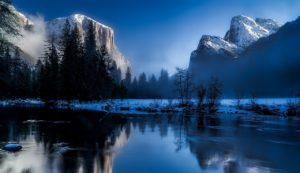
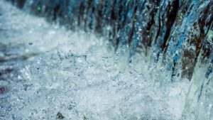
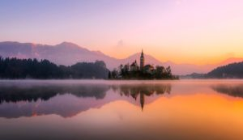
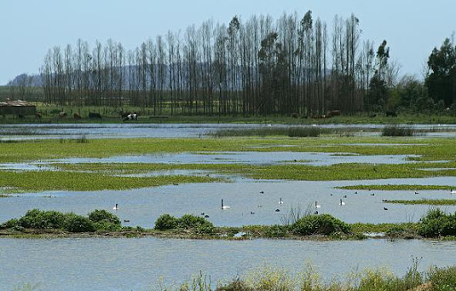

Caracteristicas de Agua Dulce

Las principales características del agua dulce son las siguientes:
Existen varios tipos de ecosistemas de agua dulce. Estos son:
Los Ríos
Integran los llamados sistemas lóticos, signados por la presencia continua de corrientes de agua dulce que fluyen en una sola dirección, cuesta abajo por efecto de la gravedad y que siempre tratarán de llegar hacia los mares u océanos.
Tienen tramos altos, medios y bajos que varían en sus características.
La zona alta o naciente del río es un área en pendiente, con bajo caudal, poca anchura y de aguas poco profundas que corren en una misma dirección. Presenta escasa luz a consecuencia de la presencia de una frondosa vegetación de ribera.
Los tramos medios y bajos de los ríos, en cambio, se caracterizan por ostentar mayor caudal, mayor profundidad, poseen sustratos más finos y temperaturas superiores, dado que gracias a su anchura hay una superior exposición solar que calienta sus aguas, generándose condiciones idóneas para la producción primaria.

No obstante, en las zonas más bajas, la profundidad aumenta, la luminosidad empeora y los sedimentos arrastrados van a parar al fondo de la cuenca, por lo que la temperatura del agua es bastante fría.
Los ríos cuentan con un sistema hidrológico que determina la variabilidad temporal de las aguas de este ecosistema, por lo que se presentarán crecidas y épocas de sequía que pueden predecirse en magnitud y duración, entre otras variables.
Estas características incidirán en forma categórica en las formas de vida que le rodean, las cuales forman parte activa del ecosistema.
Lagos lagunas, estanques, ciénagas, pantanos
Estos sistemas de agua dulce integran los sistemas lénticos, caracterizados por ser cuerpos de agua inmóviles, represados, sin flujo o corrientes, pero que persisten en el tiempo.
Del mismo modo, estos sistemas lénticos tienen tres zonas predominantes:
1-.Zona litoral del lago o laguna, donde existe vegetación variada y buena luz natural, capaz de llegar a lo más profundo.
2-.Zona pelágica, donde vive el fitoplancton. Es un área de aguas abiertas.
3-.Zona profunda, donde no llega la luz solar y, por lo tanto, no hay vida vegetal activa presente. Acá no hay presencia ni de fitoplancton ni de plantas visibles.

Cuando el volumen y la profundidad de estos sistemas lénticos aumentan, disminuirán tanto el agua que al entrar en contacto con la atmósfera produce oxígeno, como el sedimento y, por consiguiente, el ingreso de nutrientes a la columna de agua involucrada no es suficiente.
Esta característica, evidentemente, incrementa o alarga los tiempos de renovación del agua, por lo que da abrigo a comunidades pobres, poco diversas.
Humedales
Son sistemas de agua mixtos que fungen como áreas de transición entre los sistemas de aguas continentales o aguas dulces y los ecosistemas terrestres.
Se consiguen en áreas de agua semicerrada o salobre, en partes de ríos o zonas costeras, donde la salinidad es intermedia y depende de la cercanía del mar.
Cuando el suelo de esta franja se satura de agua durante una parte del año, el oxígeno desaparece y es entonces cuando emerge un ecosistema mixto o intermedio donde se entremezclan características típicas de los ecosistemas acuáticos y terrestres.

*Es uno de los ecosistemas acuáticos más importantes del planeta.
*Se llama agua dulce porque sus concentraciones de sal son mínimas.
*Tienen aproximadamente un 1% de cloruro de sodio.
*Descargan sus aguas en los océanos desde la desembocadura de los ríos.
*Cubren aproximadamente 1/5 del total de agua del planeta.
*Tienen abundante cantidad de nutrientes minerales
*Su tamaño varía y tienen sedimentos en el fondo de sus aguas.